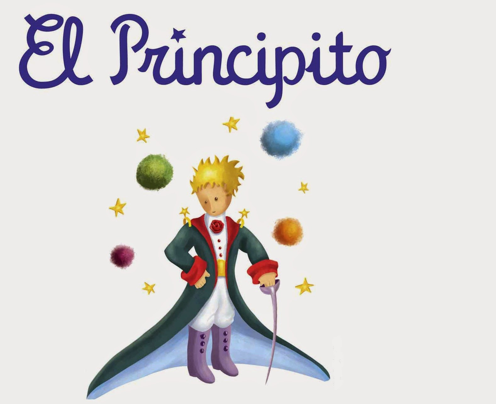

Aquí encontraras los mejores capítulos de libros.
| Capitulo 1 "El Principito" |
|---|
|
Cuando yo tenía seis años vi en un libro sobre la selva virgen que se titulaba “Historias vividas”, una magnífica lámina. Representaba una serpiente boa que se tragaba a una fiera. Esta es la copia del dibujo. En el libro decía: “Las serpientes boas se tragan su presas enteras, sin masticarlas. Luego no pueden moverse y duermen durante los seis meses que dura su digestión”. Reflexioné mucho en ese momento sobre las aventuras de la jungla y a mi vez logré trazar con un lápiz de colores mi primer dibujo. Mi dibujo número 1. Era asi: Enseñé mi obra de arte a las personas mayores y les pregunté si mi dibujo les asustaba. -¿Por qué habría de asustar un sombrero? – me respondieron. Mi dibujo no representaba un sombrero. Representaba una serpiente boa que digería un elefante. Dibujé entonces el interior de la serpiente boa a fin de que las personas grandes pudieran comprender. Siempre necesitan explicaciones. Mi dibujo número 2 era así: Las personas grandes me aconsejaron que dejara a un lado los dibujos de serpientes boas abiertas o cerradas, y que me interesara un poco más en la geografía, la historia, el cálculo y la gramática. Asi fue cómo, a la edad de seis años abandoné una magnífica carrera de pintor. Había quedado desilusionado por el fracaso de mis dibujos número 1 y número 2. Las personas grandes nunca comprenden nada por sí solas y es muy aburrido para los niños tener que darles una y otra vez explicaciones. Tuve, pues, que elegir otro oficio y aprendí a pilotear aviones. He volado un poco por todo el mundo y la geografía, en efecto, me ha servido de mucho; al primer vistazo podía distinguir perfectamente la China de Arizona. Esto es muy útil, sobre todo si se pierde uno durante la noche. A lo largo de mi vida he tenido multitud de contactos con multitud de gente seria. Viví mucho con personas grandes. Las he conocido muy de cerca; pero esto no ha mejorado demasiado mi opinión sobre ellas. Cuando me he encontrado con alguien que me parecía un poco lúcido, lo he sometido a la experiencia de mi dibujo número 1 que he conservado siempre. Quería saber si verdaderamente era un ser comprensivo. Pero siempre me respondian:: “Es un sombrero”. Entonces no le hablaba ni de serpientes boas, ni de la selva virgen y ni de estrellas. Poniéndome a su altura, les hablaba del bridge, del golf, de política y de corbatas. Y la persona grande se quedaba muy contento de conocer a un hombre tan razonable. |